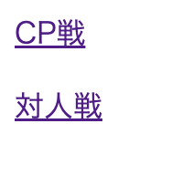
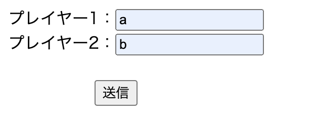
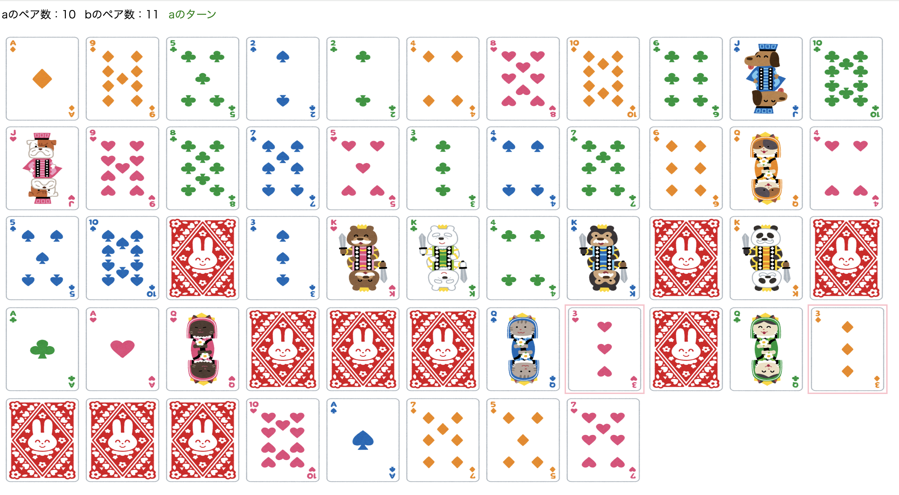
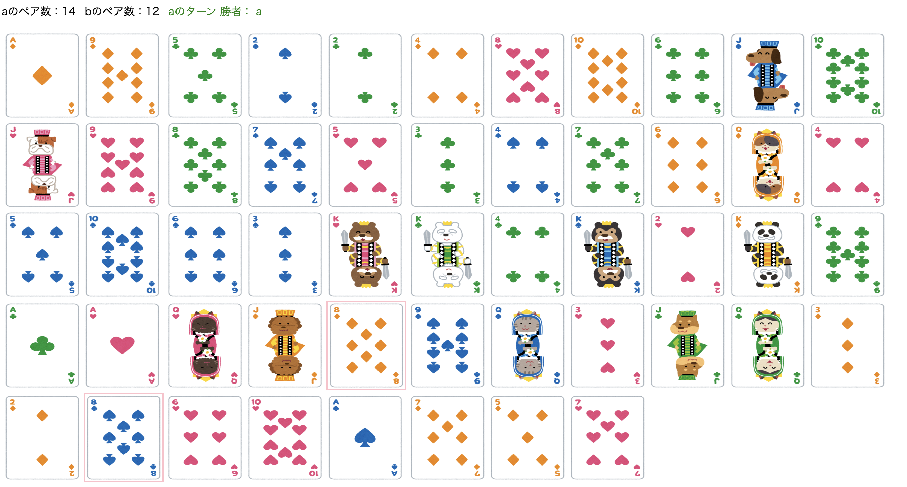
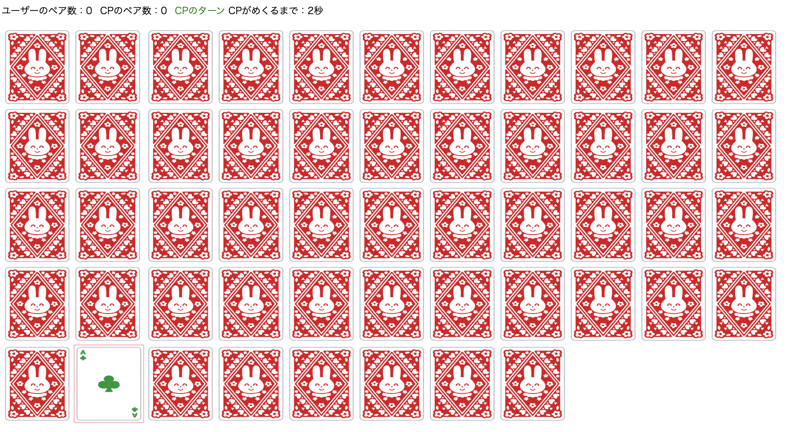
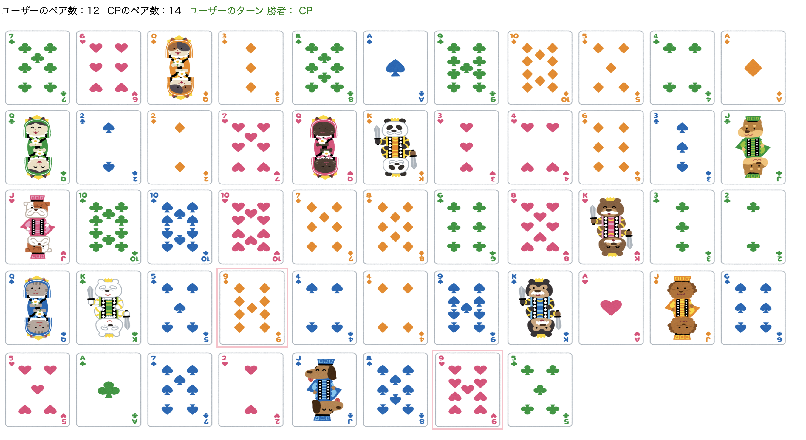

神経衰弱
【内容】
以前作成した神経衰弱をアップデートさせました。
画面前に2人いれば2人のプレイヤーとして対人戦、
もしくはCPとの対戦が可能になっています。


【構成】
【サーブレット側】
「game」というパラメータの値によって処理が変わっていきます。
・「game」のパラメータが「choice」のとき
→「CP戦」か「対人戦」かの選択画面。
・「name」のとき
→「対人戦」を選択した後のplayer2人の名前入力画面。
・「new」のとき
→Integer型のArrayListを作成してfor文で0〜51の数字を代入。
→Collectionのshuffleメソッドを使って数字の順番をシャッフル。
→PlayingCards(トランプ)インスタンスの「位置」フィールドにシャッフルした数字をset。
→sortメソッドで位置を0〜51に並び替えることでトランプがシャッフルされる仕様。
→残り枚数を把握するためにcloneメソッドで変数「copyCards」を作成。
→プレイヤーとCPのUserインスタンスを生成して、
トランプ&コピー&プレイヤー&CPをセッションに登録します。
・「versus」のとき
→「new」と同じ処理をたどりif(versusの場合)によって、
request.getParameterによる名前の設定とランダムに順番を決める処理が追加されています。
・「select」のとき(CP戦時にユーザーおよびCPがカードを選択したとき)
→Userインスタンスの「ターン」フィールドにてどちらのターンか判断し、変数に代入します。
→選択されたカードが持つ「めくられたかどうか」の値をめくられたに変更。
→☆CPの持つ記憶(トランプ型のArrayList)にそのカードが重複しないなら追加し、
記憶のサイズが6を超える場合はremoveFirstメソッドで先にめくられたカードから忘却させます。
→トランプ型ArrayListの「selectCards」にめくられたカードを追加します。
「selectCards」が2枚になったら数字が一致しているかを判断し、
一致しているならペア値を+1して「copyCards」から削除、していないなら手番を交代します。
→☆CPの持つ記憶内でペアが完成している場合
もしくは
ランダムに引いた1枚目の数字と同じ数字を記憶している場合は、
次にめくるカードをそのカードに設定します。
記憶内にない場合は「copyCards」の中から1枚をランダムに選択してそのカードをめくります。
・「vs」のとき(対人戦でカードを選択したとき)
→「select」の☆以外の処理を行います。
【JSP側】
トランプの「めくられた」or「ペア」の値によって表示の表裏面を設定し、
「めくられた」の場合は枠に色を付けていまどこがめくられたかわかりやすくしています。
CPの手番についてはJavaScriptを用いて時間経過でサーブレットを呼び出す処理にすることで、
CPと対戦ができるような仕様になっています。
「CopyCards」が0枚になったらペア値を比較して勝者を判定します。


【工夫や学び】
ラムダ式(シャッフルしたトランプを配置順に並べ替えるとき)、ラベル(CPの記憶内にペアがあるか探すとき)
を使う場面があり技術面で新たに学びを得ることができました。
読みづらいとはおもいますが「CP戦」と「対人戦」をまるまる2つ記述するのではなく、
必要な場面のみ分岐させることができてこれも思考訓練になったと感じています。
CPはランダムに好きな位置をめくってくるため覚えづらいですし、
直近6枚目まで完全に記憶してくるため私は結構接戦になります。

